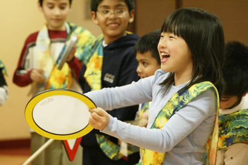
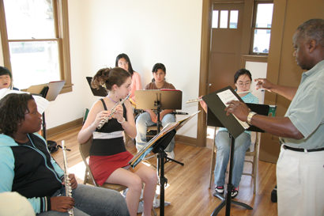

Our Partners
Music LA launched in July, 2005 with the following Department of Cultural Affairs Neighborhood Arts and Cultural Centers, music providers, and public schools:
- American Youth Symphony at Angeles Mesa Elementary School
- American Youth Symphony at Grand View Elementary School
- Art in the Park / Lalo Guerrero School of Music
- CSUN Youth Orchestras at California State University, Northridge
- Henry Mancini Institute at the Croatian Cultural Center
- Henry Mancini Institute at the Los Angeles Theater Center
- HOLA (Heart of Los Angeles Youth)
- McGroarty Arts Center
- Neighborhood Music School
- Plaza de la Raza
- San Fernando Valley Youth Chorus at the Canoga Park Youth Arts Center
- Silverlake Conservatory of Music at Barnsdall Gallery Theater
- Sound Art at the Lankershim Arts Center
- Tia Chucha’s Centro Cultural
- William Grant Still Arts Center
- Zimmer Children’s Museum
Our Students

-
Hispanic / Latino (50%)
-
African-American (35%)
-
White (10%)
-
Asian or Pacific Islander (5%)
OUR PROGRAM
- Music LA offered a total of 565 class sessions - over 1,400 hours of music instruction in just 8 weeks
- Students paid an average of $7 per class session
- Each 3- to 8-week program was individually designed and community specific
- Over 60 local professional musicians were hired to provide quality music instruction
- Curriculum included music theory, instrument training, vocal instruction, and performance
- Culminating recitals were attended by over 1,500 family, friends, and community members
